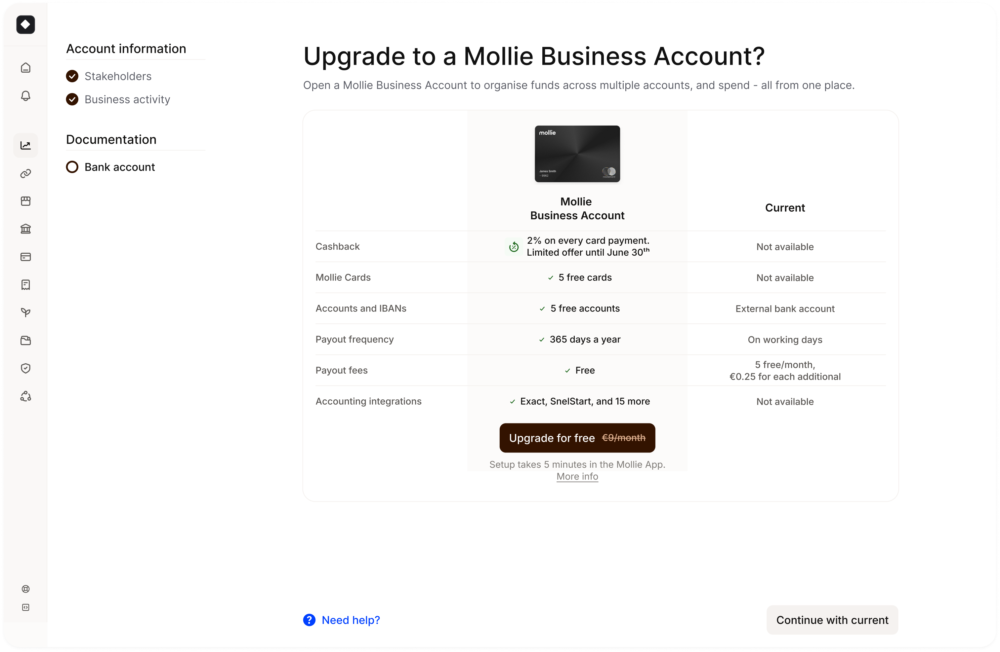

Sofia
I don't like hierarchy,
default to "how could I automate this",
I own product end to end.
I stay involved through launch and iteration, not just handoff.
I guide structure, behaviour, and quality;
prototyping using AI tools to build and iterate on flows and interfaces.
"My competitive advantage is having fun".


What I've built
2x founding designer, 1x unicorn startup, top 3 management consulting, multiple agencies.
- Mollie 2025 – Now
- Leica Camera 2024 – 2025
- Bain & Company 2022 – 2024
- Blinkoo 2020 – 2024
- Titanium Ideas 2019 – 2020
- 3x Design agencies (intern) 2018 – 2020
Mollie
Europe's fastest-growing payments company. I joined the Onboarding & Activation team to redesign how merchants go from signup to their first payment: the most critical and complex part of the funnel.
Role
Product Designer II
Timeline
2025 - 2026
The problem
- App-started journeys converted worse than desktop
- Onboarding built for compliance, not activation; fragmented across web, mobile, and MBA
- No clear next step after KYC approval; merchants stalled between account approval and first payment
Vision
| Pillar | The problem | Success |
|---|---|---|
| Mobile-first activation | App-started merchants had lower completion than desktop journeys | 1,700 merchants reached their first activation touchpoint in the new native experience |
| Self-serve B2B onboarding | Business Account legal entities required manual ops intervention to complete onboarding | 1,000 organisations onboarded, 68% start-to-completion rate |
| Guided post-KYC moment | Merchants had no clear next step after KYC was approved | Setup Guide v1 shipped, domain activation rate rose to 30% |
UX thinking
review
step
payment
Email drip post-KYC: open rates couldn't drive activation; async removed product agency from the equation
Dashboard checklist widget: only surfaces on return visits; missed the critical arrival moment right after KYC approval
Extending the KYC wizard: KYC is owned by Compliance/Risk; injecting activation logic risked regulatory exposure and blocked iteration speed
Edge case that shaped it: Multi-entity B2B orgs (holding companies with subsidiaries) needed different document flows per legal entity. This broke all linear wizard assumptions and drove the modular, step-agnostic Setup Guide architecture.



Impact
Onboarding became a strategic multi-product activation engine, not just a compliance gate.
If I could redo this
-
Start qualitative before going high-fi B2B edge cases (multi-entity legal structures) surfaced late in delivery. A structured discovery sprint upfront would have shaped the IA before we were committed to an interaction model.
-
Lobby for the post-KYC moment earlier There was a 6-week gap between KYC approval going live and the Setup Guide shipping. That lag was measurable lost activation we couldn't recover.
-
Align design tokens cross-platform from day one Inconsistency between MBA and native app created compounding design debt; every subsequent iteration cost more than it should have.
Takeaways
-
Design for intention, not just completion Move merchants through steps by helping them understand what each step is for.
-
Compliance is a design input, not an obstacle Constraints from Product, Risk, and Legal clarify the best solution; they don't block it.
-
Onboarding lives at the intersection of trust and conversion The best activation experience makes merchants feel set up to succeed, not just processed.
Play
-
Epoi host Community events organisation2026
-
App Store "App of the Day" Leica LUX App2025
-
Global Goal Jam Toronto Hackathon winner, Design for Gender Equity2024
-
Design for Web3 Hackathon winner, Polygon2023
-
Global Goals Jam Amsterdam Hackathon winner, Design for Environmental Crisis2022
Why Revolut